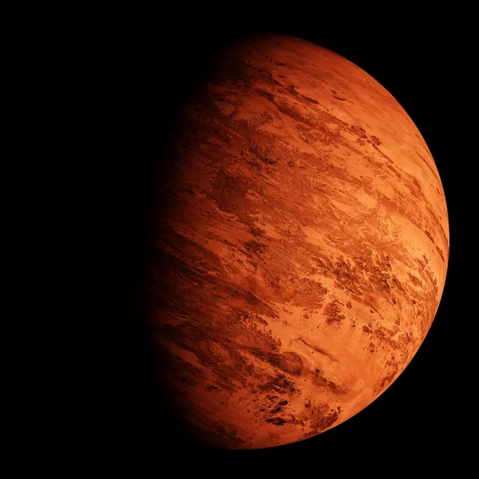

Марс найбільш вивчена планета в Сонячній системі після Землі, сьогодні він розглядається вченими, як потенційна для колонізації людством планета. Марс завжди був об'єктом людської цікавості та він часто з'являється в фантастичних фільмах та книжках.

- Здавна Марс був окутаний міфами та пеленою таємничості, поява червоної планети на небосхилі віщувала наближення війни. Через свій червоний відтінок безліч древніх народів вважали, що Марс вкритий кров'ю і саме тому він був названий на честь римського бога війни — Марса.
- Істина природа забарвлення планети пов'язана з великою кількістю оксиду заліза на його поверхні. Іншими словами на Марсі така велика кількість заліза, що планета буквально покрита іржею. Відтінок планети змінюється залежно від пір року, яких на Марсі також чотири.
- Марс не зовсім ідеально сферичної форми і дещо сплюснутий, як і Земля, на полюсах. Це невелике сплющення також зумовлене обертання планети навколо своєї осі.
- Марс — четверта та остання планета в Сонячній системі з кам’янистою поверхнею, решта планет, які знаходяться на більш віддалених від Сонця орбітах за своєю структурою газоподібні.
- Марсіанська доба триває 24 години і 37 хвилин, а орбітальний період або рік майже у двічі довший за земний і становить 687 днів.
- Як не дивно захід Сонця на Марсі, синього кольору.
- Кратери на Марсі, які більші ніж 60 км в діаметрі, названі на честь померлих вчених, письменників та видатних людей, що внесли свій вклад у вивчення Марса.
- 8. В міфах Стародавньої Греції слідом за богом війни Аресом (Марсом) в бій завжди несуться його сини Деймос і Фобос (імена богів-близнюків перекладаються як жах і страх). Саме тому у 1877 році американський астроном Асаф Голл, який відкрив супутники Марса, згідно з чинними астрономічними традиціям, дав їм імена Деймос та Фобос.
- Оскільки супутники Марса неправильної форми вчені допускають, що вони можуть бути астероїдами, які Марс захватив своєю гравітацією.
- На Марсі дуже ворожі для людини умови, зокрема планета постійно отримує величезні дози радіації, а середня температура на планеті -63 °C. Тут дуже розріджена атмосфера, тиск на планеті такий низький, що людина без спеціального скафандру дуже швидко загине. Також на Марсі періодично трапляються неймовірно потужні пилові бурі зі швидкістю вітрів понад 190 км на годину, які можуть тривати протягом декількох місяців і охоплюють всю планету.
- Не зважаючи на екстремальні умови довкілля на Червоній планеті, понад 100 000 чоловік подали заявки на поїздку в один кінець для колонізації Марса.
- На Марсі є дві крижані шапки, які змінюють свій розмір залежно від сезонів. Обидві марсіанський полярні шапки складаються з замерзлої води, але південна завжди покрита замерзлим двооксидом вуглецю - сухим льодом.
- Ще одним визначним місцем на Марсі є Долини Марінера. Це величезна система каньйонів на екваторі планети понад 4200 км завдовжки, для порівняння територія України з заходу на схід простягається на 1316 км.
- Хоч вчені не зафіксували виверження вулкана на Марсі в реальному часі, Марс має найбільший вулкан в Сонячній системі — Олімп, який здіймається на 21 км над навколишньою місцевістю. Величезна гора сформувалась потоками лави багато мільйонів років тому.